01. Score Arc
Mi favorita para el dashboard: conserva punto, equity y score sin caja, respira mejor en sidebar y no pesa visualmente.
Sidebar, auth, wordmark
Bocetos vectoriales para comparar direccion: precision, disciplina, riesgo y edge operativo. La idea es elegir una ruta y luego pulir el sistema final.
01. Score Arc
Mi favorita para el dashboard: conserva punto, equity y score sin caja, respira mejor en sidebar y no pesa visualmente.
02. Contained Score
Version de app icon/PWA: misma idea, mas solida a 32px y en launcher. Buena como pareja del concepto 01.
03. K Edge
Mas monograma y mas tech. Funciona si quieres que KMFX sea el protagonista, pero pierde parte del lenguaje de riesgo.

04. Risk Gate
Mas literal: edge cruzando una frontera de control. Explica riesgo, aunque se siente menos premium como marca principal.